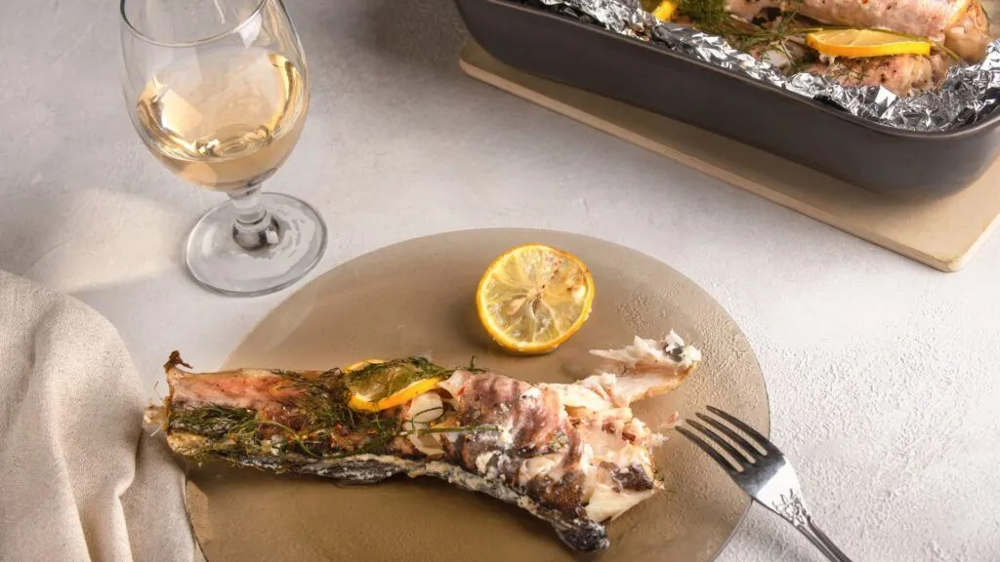
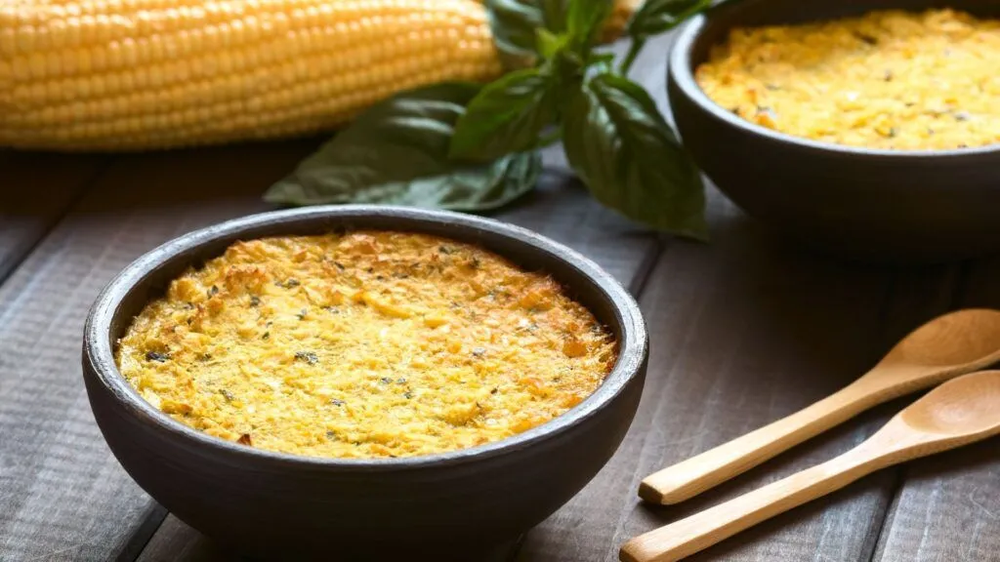
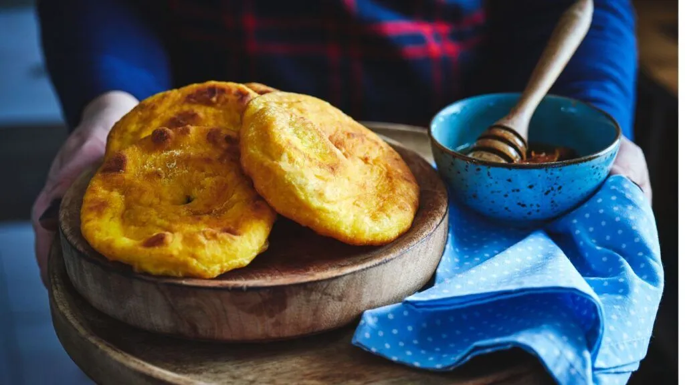

Comidas Típicas do Chile


Congrio
O congrio, que pode ser preparado como caldillo de congrio ou congrio frito, é uma comida típica chilena que utiliza como base uma espécie de enguia do mar (congrio).

Pastel de choclo
Esse prato é muito popular no Chile e seu recheio reúne ingredientes como carne moída, frango, ovos e azeitonas.

Sopaipillas
Sopaipillas são um tipo de pão, feito com massa de abóbora e frito. A massa fina é muito popular e pode ser recheada tanto com ingredientes salgados como o “pebre”, quanto com doces, como açúcar e mel.